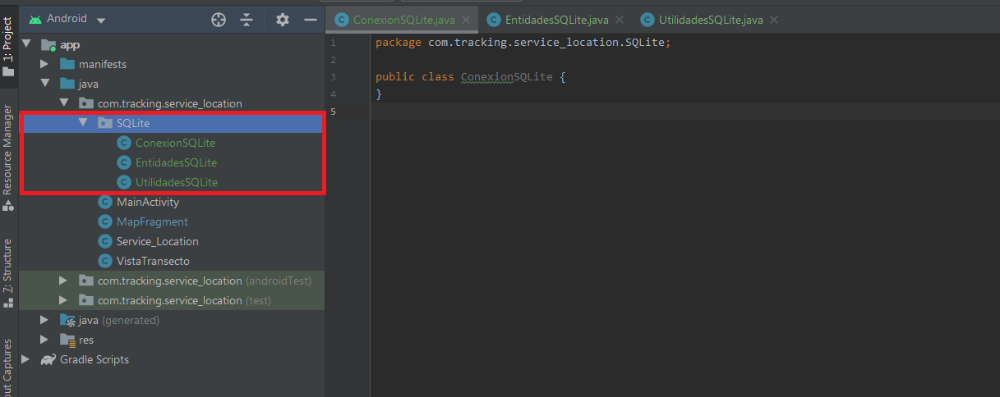
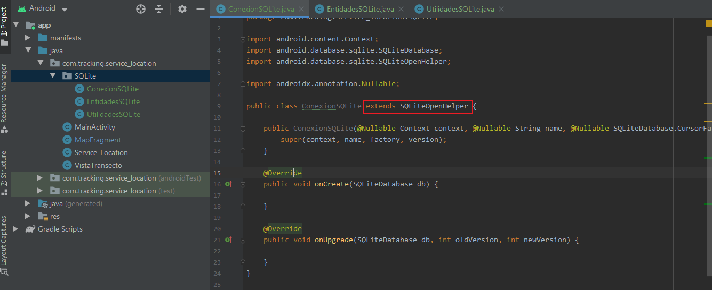
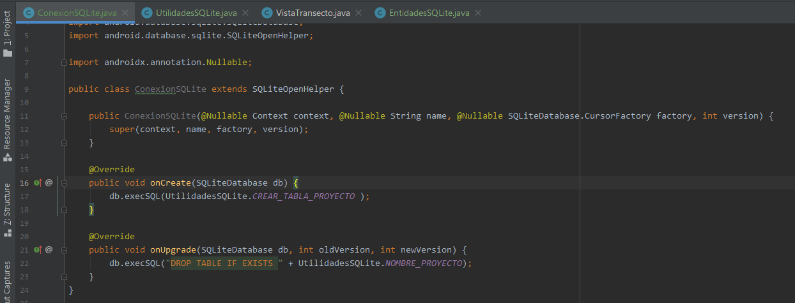
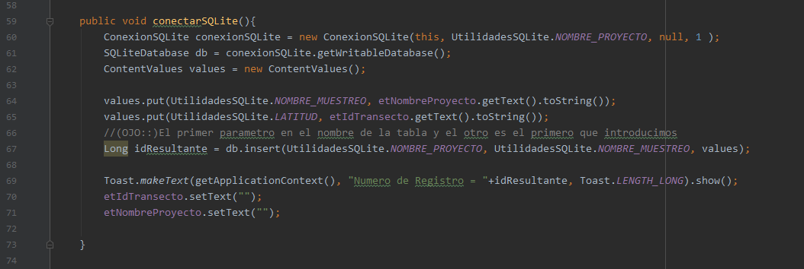
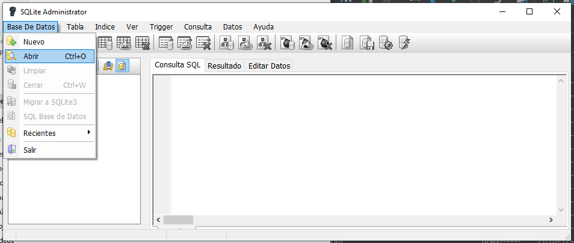
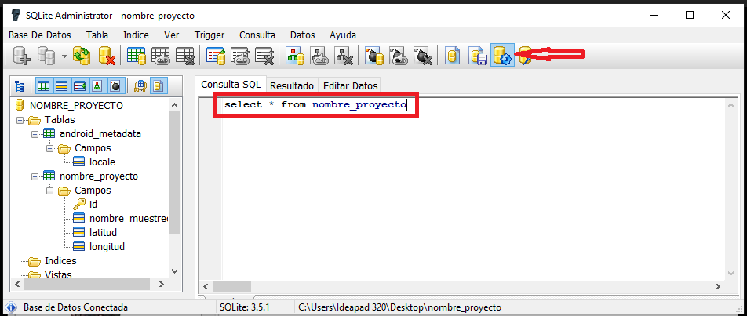
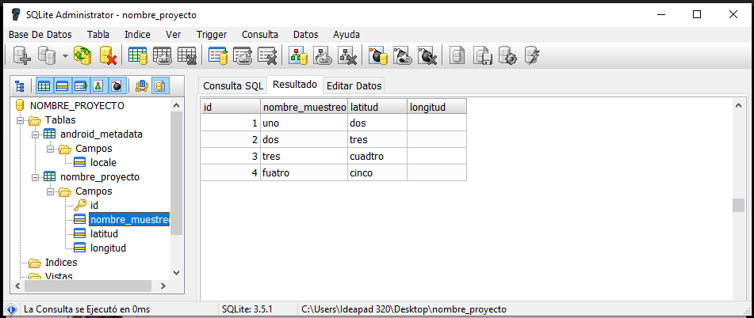

Es un sistema de gestión de bases de datos relacional RDBMS que interactúa sobre la BBDD, SQLite es de código abierto disponible en dominio público, mientras MySQL es código abierto pero propiedad de Oracle; SQLite es una base de datos sin servidor e independiente, es decir una BBDD integrada, por lo cual se ejecuta como parte de la aplicación, mientras MySQL requiere un servidor para ejecutarse.
Lo primero es Crear una clase para la conexión, entidades y utilidades, que ubicaremos en una carpeta, para mantener el orden.
En la clase indicada para la conexión se hereda de la clase SQLiteOpenHelper, mediante un extends, a solicitud de la bombilla de advertencia, implementamos métodos y el constructor.
En la clase Utilidades declaramos como constantes los nombres de los campos (Columnas) de las tablas, además la sentencia de creación de cada tabla en SQL; se presentan dos Tablas enlazadas mediante Foreign Key
public class UtilidadesSQLite {
public static final String DDBB_NAME="DDBB_tas";
////////// tabla transecto /////////////
public static final String TABLA_TRANSECTO = "tabla_transecto";
public static final String ID_TRANSECTO = "id_transecto";
public static final String FK_TRACK = "fk_track";
public static final String CREAR_TABLA_TRANSECTO = "CREATE TABLE "
+TABLA_TRANSECTO+" ("
+ID_TRANSECTO+" TEXT PRIMARY KEY, "
+FK_TRACK+" TEXT )";
////////// tabla proyecto /////////////
public static final String TABLA_PROYECTO = "tabla_proyecto";
public static final String NOMBRE_PROYECTO = "nombre_proyecto";
public static final String FK_TRANSECTO = "fk_transecto";
public static final String CREAR_TABLA_PROYECTO = "CREATE TABLE "
+TABLA_PROYECTO+" ("
+NOMBRE_PROYECTO+" TEXT, "
+FK_TRANSECTO+" TEXT, FOREIGN KEY("+FK_TRANSECTO+") REFERENCES "+TABLA_TRANSECTO+"( "+ID_TRANSECTO+") )";
}
Pasamos a la clase Conexión, en el método onCreate() indicamos la
ejecución del SQL,
utilizando la declaración de la clase utilidades.
Además en el método onUpgrade()
indicamos la ejecución de la sentencia para actualización, tener presente que se debe dejar un espacio
después de la declaración SQL
public class ConexionSQLite extends SQLiteOpenHelper {
public ConexionSQLite(@Nullable Context context, @Nullable String name, @Nullable SQLiteDatabase.CursorFactory factory, int version) {
super(context, name, factory, version);
}
@Override
public void onCreate(SQLiteDatabase db) {
db.execSQL(UtilidadesSQLite.CREAR_TABLA_TRANSECTO);
db.execSQL(UtilidadesSQLite.CREAR_TABLA_PROYECTO);
}
@Override
public void onUpgrade(SQLiteDatabase db, int oldVersion, int newVersion) {
db.execSQL("DROP TABLE IF EXISTS "+UtilidadesSQLite.TABLA_PROYECTO);
db.execSQL("DROP TABLE IF EXISTS "+UtilidadesSQLite.TABLA_TRANSECTO);
}
}

En la clase en donde queramos se establezca la conexión a la BBDD, creamos un método
para tal fin, en este caso: conectarSQLite(). En el cual declaramos un objeto de la clase Conexión
y
lo inicializamos además indicamos la propiedad de escritura con getWritableDatabase(), y
agregamos los valores a las columnas con el método put.
Es importante tener presente que en el
método db.insert( nombreBBDD, campoUno, values),
el primer parametro es el nombre de la BBDD, seguido por el primer campo y value.
además al final se coloca el método setText con comillas para dejar en blanco las casillas
private void iniciarProyecto() {
ConexionSQLite conexionSQLite = new ConexionSQLite(this, UtilidadesSQLite.DDBB_NAME, null, 1);
SQLiteDatabase ddbb = conexionSQLite.getWritableDatabase();
String insert = "INSERT INTO "+UtilidadesSQLite.TABLA_PROYECTO
+" ( " +UtilidadesSQLite.NOMBRE_PROYECTO+", "+UtilidadesSQLite.FK_TRANSECTO+") "
+" VALUES ('"+et_nombreProyecto.getText().toString()+"', '"+et_IdTransecto.getText().toString()+"')";
ddbb.execSQL(insert);
String insert2 = "INSERT INTO "+UtilidadesSQLite.TABLA_TRANSECTO
+" ( " +UtilidadesSQLite.ID_TRANSECTO+", "+UtilidadesSQLite.FK_TRACK+") "
+" VALUES ('"+et_IdTransecto.getText().toString()+"', '"+0+"')";
ddbb.execSQL(insert2);
et_nombreProyecto.setText("");
et_IdTransecto.setText("");
}

Para verificar que la información se está cargando en la BBDD, buscamos en Device
File Explorer(pestaña inferior derecha), con la aplicación corriendo y el dispositivo conectado,
debido a que se toma del archivo que genera la aplicación en el dispositivo.
Siguiendo la ruta: data/data/NombreAPP/databases/NombreBBDD, seleccionamos y con click derecho
indicamos guardar(save as), a lo que se abre una nueva ventana e indicamos donde guardar
Ahora usando el software SQLite Administrator abrimos el archivo recién guardado, a través de la ruta Base De Datos/abrir (pestaña superior izquierda); en la ventana de búsqueda que abre el tipo de archivo debe ser cualquier fichero
Para realizar la consulta en la BBDD desde SQLite Administrator, escribimos la sentencia SQL en la ventana principal, en este caso: select * from NombreBBDD y damos click en el botón de ejecutar consulta (cilindro con el engrane, parte superior centro-derecha)
La información es desplegada como se observa en la siguiente imagen
lo primero es tener una BBDD creada con informacion que podamos consultar,
Ahora, en la clase en donde queramos realizar la consulta, colocamos un EditText, donde se colocara
de busqueda y las casillas para mostrar el resultado.
para realizar la busqueda , al igual que en la clase de envio de informacion, creamos una variable
general de la clase con la conexion ConexionSQLite, la cual inicializamos en el metodo onCreate,
introduciendo los mismos parametros de su creacion: conexionSQLite = new ConexionSQLite(getApplicationContext(), UtilidadesSQLite.DDBB_NAME, null, 1 );
y creamos un metodo en donde colocamos la logica de la busqueda.
En el metodo que utilicemos para la consulta, creamos una variable SQLiteDatabase y le asignamos la variable de la conexion que habiamos creado,
con el metodo getReadableDatabase() y creamos dos variables Arays, ubicando en la primera, el parametro que va a ser usado en la consulta, y en la segunda,
los campos que esperamos de respuesta.
Luego creamos una variable de tipo Cursor, a la cual le asignamos la variable de la conexion, con el metodo query(), e incluyendo los dos arrays recien creados
para la consulta: Cursor cursor = db.query(UtilidadesSQLite.TABLA_PROYECTO, campos, UtilidadesSQLite.NOMBRE_PROYECTO+"=?", parametros, null, null, null );
posteriormente, le colocamos el metodo moveToFirst a la variable cursor y el metodo setText al TextView donde queremos se vea la informacion.
cerrando el cursor al final y rodenado todo con un try - catch, por si se consulta un nombre que no exista.
public class Continuar extends AppCompatActivity {
EditText et_c_nombreproyecto;
TextView tv_c_transecto, tv_c_sumaTransecto;
ConexionSQLite conexionSQLite;
@Override
protected void onCreate(Bundle savedInstanceState) {
super.onCreate(savedInstanceState);
setContentView(R.layout.activity_continuar);
conexionSQLite = new ConexionSQLite(getApplicationContext(), UtilidadesSQLite.DDBB_NAME, null, 1 );
et_c_nombreproyecto = findViewById(R.id.et_c_nombreProyecto);
tv_c_transecto = findViewById(R.id.tv_c_transecto);
tv_c_sumaTransecto = findViewById(R.id.tv_c_sumaTransecto);
}
public void buscar(View view) {
SQLiteDatabase db = conexionSQLite.getReadableDatabase();
String [] parametros = {et_c_nombreproyecto.getText().toString()};
String[] campos = {UtilidadesSQLite.FK_TRANSECTO};
try {
Cursor cursor = db.query(UtilidadesSQLite.TABLA_PROYECTO, campos, UtilidadesSQLite.NOMBRE_PROYECTO+"=?",
parametros, null, null, null );
cursor.moveToFirst();
tv_c_transecto.setText(cursor.getString(0));
cursor.close();
} catch (Exception e) {
Toast.makeText(this, "", Toast.LENGTH_SHORT).show();;
et_c_nombreproyecto.setText("");
}
}
Bueno, quizas el titulo no es lo bastante claro, la idea es que despues de haber
usado las tablas de la BBDD, entremos a un nuevo antivity, y desde este enviemos informacion a una
que no halla recibido datos.
Dentro del metodo que bayamos a utilizar, (NO como variable general), declaramos una variable de la
clase de conexion conexionSQLite e inicializamos, despues creamos una variable de la clases
SQLiteDatabase y la inicializamos con la variable anterior y el metodo getWritableDatabase().
Luego, generamos la sentencia de inclucion de datos, como un String, y esa sentencia la colocamos
para la variable de SQLiteDatabase (ddbb), con el metodo execSQL().
private void enviarInformacion() {
ConexionSQLite conexionSQLite = new ConexionSQLite(this, UtilidadesSQLite.DDBB_NAME, null, 1);
SQLiteDatabase ddbb = conexionSQLite.getWritableDatabase();
String insert1 = "INSERT INTO "+UtilidadesSQLite.TABLA_TRACK
+" ( " +UtilidadesSQLite.ESPECIE+", "+UtilidadesSQLite.DENSIDAD+") "
+" VALUES ('"+et_especie.getText().toString()+"', '"+et_cantidad.getText().toString()+"')";
ddbb.execSQL(insert1);
et_especie.setText("");
et_cantidad.setText("");
}